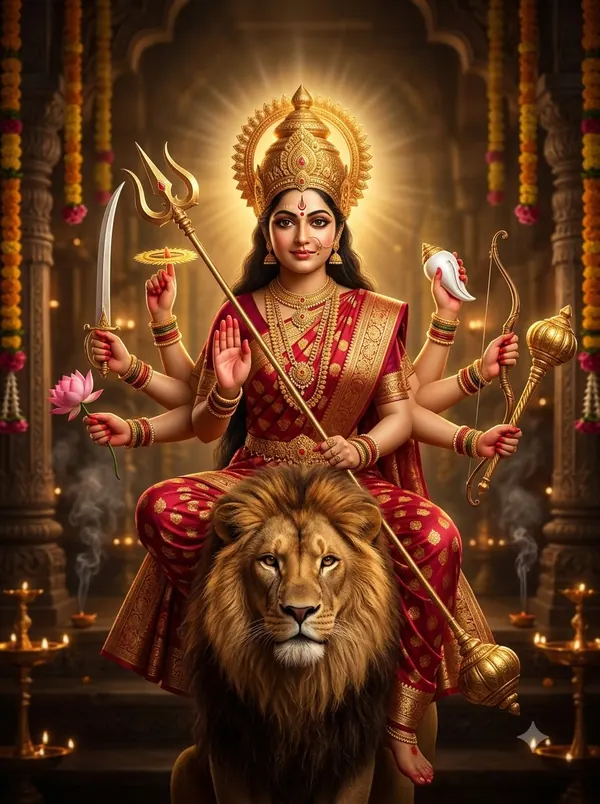

संतोषी माता चालीसा — पूरे बोल और अर्थ
‘जय सन्तोषी मात अनूपम’ से शुरू होने वाली संतोषी माता चालीसा में माँ को गणेश जी की पुत्री बताया गया है और देश भर के देवी-धामों में उनके रूपों का वर्णन है। इसमें शुक्रवार व्रत, गुड़-चने के भोग और कथा की महिमा भी आती है।
शुक्रवार के व्रत में — साथ में जय अम्बे गौरी और दुर्गा चालीसा।

दोहा
बन्दौं सन्तोषी चरण, रिद्धि-सिद्धि दातार। ध्यान धरत ही होत नर, दुःख सागर से पार॥
मैं रिद्धि-सिद्धि देने वाली संतोषी माता के चरणों की वंदना करता हूँ; उनका ध्यान करते ही मनुष्य दुखों के सागर से पार हो जाता है।
भक्तन को सन्तोष दे, सन्तोषी तव नाम। कृपा करहु जगदम्ब अब, आया तेरे धाम॥
आप भक्तों को संतोष देती हैं, इसीलिए आपका नाम संतोषी है। हे जगदंबा, अब कृपा कीजिए — मैं आपके धाम आया हूँ।
चौपाई
जय सन्तोषी मात अनूपम। शान्ति दायिनी रूप मनोरम॥
अनुपम संतोषी माता की जय हो; आप शांति देने वाली हैं और आपका रूप मन को मोह लेता है।
सुन्दर वरण चतुर्भुज रूपा। वेश मनोहर ललित अनूपा॥
आपका रंग सुंदर है, आप चार भुजाओं वाली हैं, और आपका वेश मनोहर, कोमल और अनोखा है।
श्वेताम्बर रूप मनहारी। माँ तुम्हारी छवि जग से न्यारी॥
सफ़ेद वस्त्रों में आपका रूप मन हर लेता है; माँ, आपकी छवि पूरे संसार से निराली है।
दिव्य स्वरूपा आयत लोचन। दर्शन से हो संकट मोचन॥
आपका स्वरूप दिव्य है और नेत्र बड़े-बड़े हैं; आपके दर्शन से संकट छूट जाते हैं।
जय गणेश की सुता भवानी। रिद्धि-सिद्धि की पुत्री ज्ञानी॥
हे भवानी, आपकी जय हो — आप गणेश जी की बेटी और रिद्धि-सिद्धि की ज्ञानवान पुत्री हैं।
अगम अगोचर तुम्हरी माया। सब पर करो कृपा की छाया॥
आपकी माया न समझ में आती है, न आँखों से दिखती है; सब पर अपनी कृपा की छाया कीजिए।
नाम अनेक तुम्हारे माता। अखिल विश्व है तुमको ध्याता॥
माँ, आपके अनेक नाम हैं और सारा संसार आपका ध्यान करता है।
तुमने रूप अनेकों धारे। को कहि सके चरित्र तुम्हारे॥
आपने अनेक रूप धारण किए हैं; आपकी लीलाओं का वर्णन कौन कर सकता है?
धाम अनेक कहाँ तक कहिये। सुमिरन तब करके सुख लहिये॥
आपके कितने धाम गिनाएँ? आपका स्मरण करके ही सुख मिलता है।
विन्ध्याचल में विन्ध्यवासिनी। कोटेश्वर सरस्वती सुहासिनी॥
विंध्याचल में आप विंध्यवासिनी हैं, और कोटेश्वर में मधुर मुस्कान वाली सरस्वती।
कलकत्ते में तू ही काली। दुष्ट नाशिनी महाकराली॥
कलकत्ते में आप ही काली हैं — दुष्टों का नाश करने वाली महाकराली।
सम्बलपुर बहुचरा कहाती। भक्तजनों का दुःख मिटाती॥
संबलपुर में आप बहुचरा माता कहलाती हैं और भक्तों का दुख मिटाती हैं।
ज्वाला जी में ज्वाला देवी। पूजत नित्य भक्त जन सेवी॥
ज्वाला जी में आप ज्वाला देवी हैं, जहाँ सेवा करने वाले भक्त रोज़ आपकी पूजा करते हैं।
नगर बम्बई की महारानी। महालक्ष्मी तुम कल्याणी॥
मुंबई नगर की महारानी, कल्याण करने वाली महालक्ष्मी आप ही हैं।
मदुरा में मीनाक्षी तुम हो। सुख दुख सबकी साक्षी तुम हो॥
मदुरै में आप मीनाक्षी हैं; सबके सुख-दुख की साक्षी आप ही हैं।
राजनगर में तुम जगदम्बे। बनी भद्रकाली तुम अम्बे॥
राजनगर में आप जगदंबा हैं; हे अम्बे, वहाँ आप भद्रकाली बनकर विराजती हैं।
पावागढ़ में दुर्गा माता। अखिल विश्व तेरा यश गाता॥
पावागढ़ में आप दुर्गा माता हैं; पूरा संसार आपका यश गाता है।
काशी पुराधीश्वरी माता। अन्नपूर्णा नाम सुहाता॥
काशी नगरी की स्वामिनी माता, वहाँ आपका अन्नपूर्णा नाम शोभा देता है।
सर्वानन्द करो कल्याणी। तुम्हीं शारदा अमृत वाणी॥
हे कल्याणी, सबको आनंद दीजिए; अमृत जैसी वाणी वाली शारदा (सरस्वती) भी आप ही हैं।
तुम्हरी महिमा जल में थल में। दुःख दारिद्र सब मेटो पल में॥
आपकी महिमा जल और थल में हर जगह है; आप दुख और दरिद्रता पल भर में मिटा देती हैं।
जेते ऋषि और मुनीशा। नारद देव और देवेशा॥
जितने भी ऋषि, मुनि, नारद जी, देवता और देवराज इंद्र हैं —
इस जगती के नर और नारी। ध्यान धरत हैं मात तुम्हारी॥
— और इस संसार के सभी स्त्री-पुरुष, हे माँ, आपका ही ध्यान करते हैं।
जापर कृपा तुम्हारी होती। वह पाता भक्ति का मोती॥
जिस पर आपकी कृपा होती है, वही भक्ति रूपी मोती पाता है।
दुःख दारिद्र संकट मिट जाता। ध्यान तुम्हारा जो जन ध्याता॥
जो आपका ध्यान करता है, उसके दुख, दरिद्रता और संकट मिट जाते हैं।
जो जन तुम्हरी महिमा गावै। ध्यान तुम्हारा कर सुख पावै॥
जो आपकी महिमा गाता है, वह आपका ध्यान करके सुख पाता है।
जो मन राखे शुद्ध भावना। ताकी पूरण करो कामना॥
जो मन में शुद्ध भाव रखता है, आप उसकी कामना पूरी करती हैं।
कुमति निवारि सुमति की दात्री। जयति जयति माता जगधात्री॥
आप बुरी बुद्धि हटाकर अच्छी बुद्धि देती हैं; संसार को धारण करने वाली माता, आपकी जय हो।
शुक्रवार का दिवस सुहावन। जो व्रत करे तुम्हारा पावन॥
शुक्रवार का दिन बहुत शुभ है; जो इस दिन आपका पवित्र व्रत करता है —
गुड़ छोले का भोग लगावै। कथा तुम्हारी सुने सुनावै॥
— गुड़ और चने का भोग लगाता है, आपकी कथा सुनता और सुनाता है —
विधिवत पूजा करे तुम्हारी। फिर प्रसाद पावे शुभकारी॥
— विधि से आपकी पूजा करता है और फिर शुभ प्रसाद ग्रहण करता है —
शक्ति-सामर्थ्य हो जो धन को। दान-दक्षिणा दे विप्रन को॥
— और अपनी सामर्थ्य के अनुसार ब्राह्मणों को दान-दक्षिणा देता है,
वे जगती के नर औ नारी। मनवांछित फल पावें भारी॥
संसार के ऐसे सभी स्त्री-पुरुष भरपूर मनचाहा फल पाते हैं।
जो जन शरण तुम्हारी जावे। सो निश्चय भव से तर जावे॥
जो आपकी शरण में जाता है, वह निश्चय ही संसार-सागर से पार हो जाता है।
तुम्हरो ध्यान कुमारी ध्यावे। निश्चय मनवांछित वर पावै॥
जो कुंवारी कन्या आपका ध्यान करती है, उसे निश्चय ही मनचाहा वर मिलता है।
सधवा पूजा करे तुम्हारी। अमर सुहागिन हो वह नारी॥
जो सुहागिन आपकी पूजा करती है, उसका सुहाग अमर रहता है।
विधवा धर के ध्यान तुम्हारा। भवसागर से उतरे पारा॥
विधवा स्त्री भी आपका ध्यान करके संसार-सागर से पार उतर जाती है।
जयति जयति जय संकट हरणी। विघ्न विनाशन मंगल करनी॥
संकट हरने वाली, विघ्नों का नाश करने वाली और मंगल करने वाली माँ, आपकी जय हो, जय हो।
हम पर संकट है अति भारी। वेगि खबर लो मात हमारी॥
माँ, हम पर बहुत भारी संकट है; जल्दी हमारी सुध लीजिए।
निशिदिन ध्यान तुम्हारो ध्याता। देह भक्ति वर हम को माता॥
हम दिन-रात आपका ध्यान करते हैं; हे माता, हमें भक्ति का वरदान दीजिए।
यह चालीसा जो नित गावे। सो भवसागर से तर जावे॥
जो यह चालीसा रोज़ गाता है, वह संसार-सागर से पार हो जाता है।
दोहा
संतोषी माँ के सदा, बंदहूँ पग निशि वास। पूर्ण मनोरथ हो सकल, मात हरौ भव त्रास॥
मैं दिन-रात संतोषी माँ के चरणों की वंदना करता हूँ; माँ, मेरे सब मनोरथ पूरे कीजिए और संसार का भय हर लीजिए।
संतोषी माता चालीसा का पाठ पूरा हुआ।
किसी अपने को WhatsApp पर भेजेंपाठ पारंपरिक है और अलग-अलग क्षेत्रों में शब्दों में थोड़ा अंतर मिलता है। अर्थ सरल हिंदी में OmKiran Bhakti ने लिखा है। कोई त्रुटि दिखे तो YouTube पर कमेंट करके बताएँ।